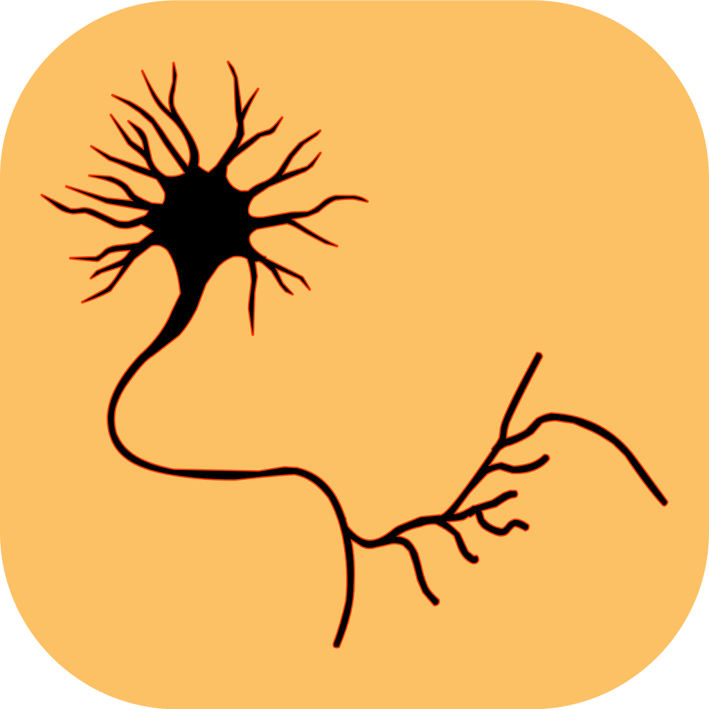

Neuron
Neuron be simple. Neuron be quick. Neuron makes markup epic and slick.
Neuron is a powerful and intelligent markup language for writing a better world. Writing Neuron code is easy and fun, the syntax makes sense and doesn’t use extremely awkward keys, and your pages now load faster then your nerve impulses! Neuron has been engineered to help the simplest of people markup pages in a flash.
Smart and Friendly
Neurone is now kinder than ever! Device-based Queries make it so that only certain code is served to the specific device. This means that you get what you want on a device without having to sit through countless, precious hours of loading time for all the responsiveness to load and the page to format properly.
Bloat is on a different boat
Neuron knows that you love modularity. It also know that some times, not all code is used. That’s why Neuron now takes only what it needs from your imports and leaves back all the bloat. It’s like when you’re flying - you don’t want to have any extra, unnecessary weight, because if you do, you’ll be stuck at the baggage check in for quiet a while.
No more tax in syntax
Neuron is taking the tax out of syntax. It comes with to different styles for syntax that each provide benefits. There’s the block syntax which provides layout of the page and the modifier syntax which modifies elements in your page to make it look better. Put these together and you have a recipe for having fun writing pages while still enhancing then for the best viewing.
Mixins*
Sometimes, you just have to let something take some value. Neuron comes with a cool feature that is missing in more traditional markup languages: mixins. You can define mixins anywhere in your page and then include those mixins in multiple places across your page and Neuron will render the, as other elements in your page.
Open Source*
Neuron is still being made better and firm. Think of it as a baby’s brain in its infancy. Once there is a better foundation for Neuron, you can expect it to be open sourced. Meanwhile, check out some of VWAS Studios’ other open source projects on GitHub.
Let’s do it!
Here’s how you can use Neuron in your project!
Support
Got a pressing question about that you need answered about Neuron?
You can hit the documentation, send us an email or tweet at us.
We hope you enjoy using Neuron
* denotes a feature that is to be expected in a newer version of Neuron